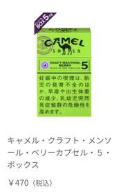
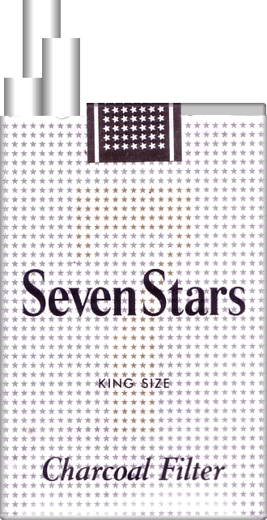
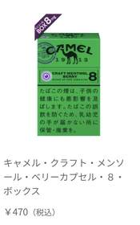

ARCHIVE 001
実物写真で確認
パッケージや形状を、確認可能な資料から見る。
成人向け商品の調査用デモです。未成年者の喫煙は法律で禁じられています。本サイトでは販売・決済を行いません。
日本市場のたばこを、商品画像・価格・仕様・出典から整理する。売るためではなく、正確に知るための静かな商品庫。



商品を「広告」ではなく、比較できる資料として見る。
現在の商品庫は日本たばこ57参照SKUと、ユーザーが提供した紙巻き・加熱式商品を同じカタログで収録しています。
見た目、品類、仕様、出典。必要な情報だけを同じルールで並べ、探す時間と判断のノイズを減らします。
パッケージや形状を、確認可能な資料から見る。
名称の違いを越えて、同じ分類軸で比較する。
掲載できない画像は転載せず、確認先を明示する。
ブランド名を知らなくても種類から探索できます。
シリーズ、タイプ、仕様を共通の視点で整理します。
確認元を資料の一部として扱い、判断の根拠を残します。
商品を孤立したカードにせず、ブランド・シリーズ・タイプ・仕様・類似資料をひとつの関係として見るための構造です。
現在は情報設計プロトタイプ。資料追加に合わせて関係データを拡張します。
商品を推薦するためではなく、分類や表示を正しく読むための基礎知識をまとめます。
基本的な構造と分類の見方。
仕組みとカテゴリー上の違い。
表示される数値をどう読むか。
形状・分類上の基本的な違い。
商品分類で使われる表現を整理。
KISARAGIが情報確認元を残す理由。
KISARAGIは、商品名を並べるだけのカタログではありません。実物、分類、仕様、出典をひとつの視点で整理し、成人利用者や業務関係者が情報を確認しやすい体験を研究するプロトタイプです。
現在は調査デモとして公開しており、実際の商品販売、決済、配送、個人情報の保存は行っていません。
掲載情報の訂正、権利に関するご連絡、店舗・卸売向けのデモ相談窓口は現在準備中です。
お問い合わせ窓口 準備中